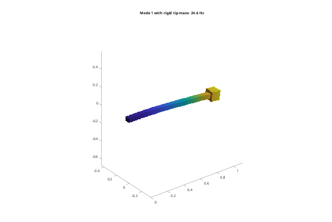
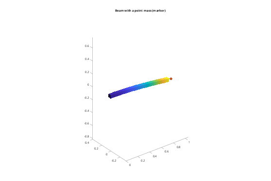

Contents
Tutorial 6 - Rigid bodies
Parts that are much stiffer than the rest of a structure (a payload, a frame, a tool) can be modelled as rigid. A rigid body has 6 dofs at its reference point and no stiffness; its mesh only provides its mass, inertia and surface. This tutorial covers:
- creating rigid bodies, their reference dofs and mass properties
- tying elastic bodies to rigid ones
- supporting rigid bodies, and choosing the reference point
- rigid bodies without a volume mesh: STL surface or mass properties only
addpath(fileparts(fileparts(mfilename('fullpath')))); out = fullfile(tempdir, 'femTutorials'); if ~isfolder(out), mkdir(out); end fem.boxSTL(fullfile(out, 'beam.stl'), [0 0 0], [1000 50 50]); fem.boxSTL(fullfile(out, 'block.stl'), [1000 -25 -25], [1100 75 75]); steel = fem.material(210e9, 0.3, 7850);
1. A rigid body
Rigid = true; only the density of the material is used. A coarse Tet4 mesh is enough: the mass and inertia come out exact anyway.
block = fem.Body(fullfile(out, 'block.stl'), struct('rho', 7850), ... Size = 50, Order = 1, Scale = 1e-3, Rigid = true); fprintf('reference point (centroid): %s m\n', mat2str(block.Ref, 3));
reference point (centroid): [1.05 0.025 0.025] m
2. Reference dofs and mass properties
In an assembly, a rigid body has 6 dofs [ux uy uz rx ry rz] (small rotations) at its reference point. All its nodes follow: u = u_ref + r x (x - x_ref) For a free rigid body, the reduced M is its 6x6 mass/inertia matrix.
a = fem.Assembly(); a.add(block); [K, M] = a.system(); M = full(M); m = 7850*0.1^3; fprintf('reduced size %d, K = 0: %d\n', size(K, 1), nnz(K) == 0); fprintf('mass %.3f kg (exact %.3f), Ixx %.5f kg m^2 (exact %.5f)\n', ... M(1,1), m, M(4,4), m*(2*0.1^2)/12); disp(a.dof('block')'); % its 6 global dofs (after node dofs)
reduced size 6, K = 0: 1
mass 7.850 kg (exact 7.850), Ixx 0.01308 kg m^2 (exact 0.01308)
1051 1052 1053 1054 1055 1056
3. An elastic beam with a rigid tip mass
A tie between an elastic and a rigid body always uses the rigid body as master, whatever order you give.
beam = fem.Body(fullfile(out, 'beam.stl'), steel, Size = 25, Scale = 1e-3); a = fem.Assembly(); a.add(beam); a.add(block); a.tie('beam', 'block'); a.fix('beam', @(X) X(:,1) < 1e-9); [K, M, T] = a.system(); [V, f] = fem.modes(K, M, 4); % Estimate: cantilever with a point mass at the tip (Rayleigh, plus 0.24 of % the beam mass). The block's centre of mass actually lies 50 mm beyond the % tip, and the block has rotary inertia; both lower the FE value. EI = 210e9*0.05^4/12; mb = 7850*0.05^2; fEst = sqrt(3*EI/(m + 0.24*mb))/(2*pi); fprintf('f1: FE %.2f Hz, point-mass estimate %.2f Hz\n', f(1), fEst); u = T*V(:,1); figure('Color', 'w'); a.plot(u, 0.1/max(abs(u(1:3*size(a.X, 1))))); title(sprintf('Mode 1 with rigid tip mass: %.1f Hz', f(1))); % Note: u also holds the rotation dofs of the reference point (radians), % so the plot scale uses only the node dofs.
f1: FE 24.62 Hz, point-mass estimate 25.72 Hz

4. Supporting a rigid body
Rigid bodies are supported through their reference dofs: a.fix(body, [], dirs) with dirs a subset of 1:6. Fixing only the rotations gives a guided end: the block can translate but not rotate.
a.fix('block', [], 4:6); [K, M] = a.system(); [~, fg] = fem.modes(K, M, 2); fprintf('guided tip: f1 = %.2f Hz\n', fg(1));
guided tip: f1 = 46.72 Hz
5. Choosing the reference point
RefPoint puts the 6 dofs somewhere else, for instance at a sensor or at the point where a load acts. The dynamics are the same, only the coordinates change.
block2 = fem.Body(fullfile(out, 'block.stl'), struct('rho', 7850), Size = 50, ... Order = 1, Scale = 1e-3, Rigid = true, RefPoint = [1.1 0.025 0.025]); a = fem.Assembly(); a.add(beam); a.add(block2); a.tie('beam', 'block'); a.fix('beam', @(X) X(:,1) < 1e-9); [K, M] = a.system(); [~, f2] = fem.modes(K, M, 4); fprintf('same frequencies with RefPoint at the tip face: %d\n', norm(f2 - f)/norm(f) < 1e-8);
same frequencies with RefPoint at the tip face: 1
6. Rigid bodies without a mesh: STL surface only
A rigid body only needs its surface (for ties and plots) and its mass properties, so meshing it is optional. fem.Body.rigidSurface reads the STL triangles directly and computes mass, centre of mass and inertia exactly from the closed surface. No Gmsh is needed, which helps for complex CAD parts that are hard to mesh.
blockS = fem.Body.rigidSurface(fullfile(out, 'block.stl'), 7850, Scale = 1e-3); fprintf('surface-only block: %d vertices, m = %.3f kg, c = %s m\n', ... blockS.nNode, blockS.MassProps.m, mat2str(blockS.MassProps.c, 3)); a = fem.Assembly(); a.add(beam); a.add(blockS); a.tie('beam', 'block'); a.fix('beam', @(X) X(:,1) < 1e-9); [K, M] = a.system(); [~, fs] = fem.modes(K, M, 4); fprintf('same frequencies as the meshed block: %d\n', norm(fs - f)/norm(f) < 1e-8);
surface-only block: 8 vertices, m = 7.850 kg, c = [1.05 0.025 0.025] m same frequencies as the meshed block: 1
7. Point masses: mass properties only
fem.Body.pointMass(m, c, J) is a rigid body with mass m, centre of mass c and inertia tensor J (about c), e.g. a motor taken from a CAD mass-property report. It has no surface, so it is attached with a joint, here a fixed joint to a coupling on the beam's tip face.
J = m*(2*0.1^2)/12*eye(3); % cube: Jxx = Jyy = Jzz motor = fem.Body.pointMass(m, [1.05 0.025 0.025], J, Name = 'motor'); a = fem.Assembly(); a.add(beam); a.add(motor); tipFace = a.couple('beam', @(X) X(:,1) > 1 - 1e-9); a.joint(tipFace, 'motor', 'fixed'); a.fix('beam', @(X) X(:,1) < 1e-9); [K, M, T] = a.system(); [V, fp] = fem.modes(K, M, 4); fprintf('point mass: f1 = %.2f Hz (meshed block %.2f Hz)\n', fp(1), f(1)); u = T*V(:,1); figure('Color', 'w'); a.plot(u, 0.1/max(abs(u(1:3*size(a.X, 1))))); title('Beam with a point mass (marker)');
point mass: f1 = 24.62 Hz (meshed block 24.62 Hz)
